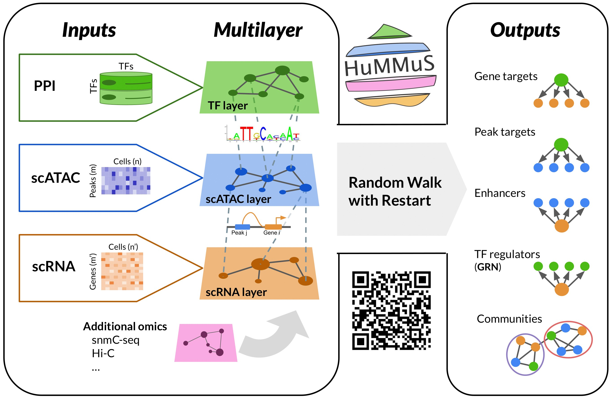

Heterogeneous Multilayer network for Multi-omics Single-cell data
HuMMuS exploits multi-omics single-cell measurements to infer numerous regulatory mechanisms. Inter-omics interactions (e.g. peak-gene, TF-peak) and intra-omics interactions (e.g. peak-peak, gene-gene, TF-TF) are considered to capture both regulatory interactions and macromolecule cooperations.
Overview
The current outputs available from HuMMuS are
- gene regulatory networks (GRNs)
- enhancers
- TF - DNA binding regions
- TF - target genes.
Read our publication for more details !

scRNA + scATAC
Like most current state-of-the-art methods to infer GRN, we provide a standard version of HuMMuS based on scRNA-seq + scATAC-seq data (paired or unpaired).
Additional modalities
HuMMuS has been developed to be extendable to any additional biological modality of interest. It is then possible to add any additional network to an already existing modality (e.g. both prior-knowledge network and data-driven network of genes), or from a new modality (e.g. adding epigenetic or proteomic networks).
For now, such personalisation requires directly using some hummuspy (Python package) functions at the end of the pipeline and writing some configuration files manually. It will be simplified soon !
Tutorials/Vignettes
- Infer a gene regulatory network and other outputs from unpaired/paired scRNA + scATAC data shows the application of HuMMuS to the Chen dataset, used in the benchmark of HuMMuS publication.
Installation
HuMMuS is (for now!) only available in R and requires the hummuspy Python library. Be sure to install a virtual environment with hummuspy and make use of the reticulate R library to connect the two parts.
HuMMuS Python dependency
Python package hummuspy should preferably be installed using pip (from the terminal in a conda environment for example)
Alternatively, you can also install it directly from R using the reticulate package:
library(reticulate)
py_install("hummuspy", envname = "r-reticulate", method="auto")HuMMuS R package
The core R package can be installed directly from R:
devtools::install_github("cantinilab/HuMMuS", ref="dev_SeuratV5")
# If you only work SeuratV4, you can also use the main branch that will soon be deprecated
#devtools::install_github("cantinilab/HuMMuS")Before running HuMMuS, if you’re using multiple conda environments, you must ensure that the reticulate package points to the virtual environment where hummuspy is installed. You can specify it at the beginning of your R script, e.g.:
library(reticulate)
# Using a specific conda environment
envname = "hummuspy_env" # or "r-reticulate" for, e.g.:
use_condaenv(envname, required = TRUE)For more details on how to set up the reticulate connection, see: https://rstudio.github.io/reticulate
scATAC processing
To compute the scATAC data with HuMMuS, we propose to use Cicero. It requires the version running with Monocle3. You then need to install both Monocle3, and Cicero:
devtools::install_github("cole-trapnell-lab/monocle3")
devtools::install_github("cole-trapnell-lab/cicero-release", ref = "monocle3")If you encounter some troubles with Monocle3 installation, on Ubuntu you can try to run: sudo apt-get install libgdal-dev libgeos-dev libproj-dev. You can also go on their GitHub page for more help. Having Monocle version 1 or 2 still loaded in your R session may cause conflicts. If you encounter some even after restarting your R session, try to remove.packages("monocle") before reinstalling both Monocle3 and Cicero
Alternatively, we recently developed Circe, a Python package that replaces Cicero and adds some functionality. Circe should be much faster but will require to generate first the network in python, before loading it in your R session. Since the preprocessing is different from Cicero, results will also differ.
Data accessibility
To reproduce HuMMuS results presented in the manuscript, preprocessed data are accessible here
For quick tests, the Chen dataset preprocessed is accessible directly through the package as a Seurat object: load(chen_dataset), along with a subset version load(chen_dataset_subset).
Recommendations for users, issues and bugfixes
- We recommend using common gene symbols for defining gene names (e.g. human: MYC, NFKB2, mouse: Myc, Nfkb2). This is especially useful when using some Hummus functions that query external tools, like
compute_tf_network, that can queryOmnipath. - Currently, HuMMus supports only the double
-separator for genomic coordinates, e.g.chr1-13354210-27462910. We strongly recommend always using this format for genomic coordinates to optimise the creation of the Hummus object and the tool run. - We recommend installing the
hummuspyPython library in a clean conda or virtual environment. - We use the
dasklibrary for parallelisation of some tasks in the Python side of HuMMus. In case you encounter some issues with parallelisation, try the following:- If you are running HuMMus through an HPC schedule manager(like SLURM), try assigning a specific amount of RAM to each core (for example, 10GB per core) rather than a global pool of memory, while reducing the total number of cores
- Try reducing the size of the networks, i.e. by retaining only the top % of edges in the GRN or the peak-peak network.
- We are currently testing this branch to improve memory management with Hummus. You can install this branch in a clean environment and run HuMMus using that version through reticulate. To do so, you can execute the following:
-
pip install git+https://github.com/cantinilab/HuMMuS.git@17136df93101d84910dfa9297232132990ff965b#subdirectory=hummuspy(NOTE here it is not necessary to specify the memory per core, just let the HPC scheduler allocate it)
-
Cite us
Trimbour R., Deutschmann I. M., Cantini L. Molecular mechanisms reconstruction from single-cell multi-omics data with HuMMuS. Bioinformatics (2024), btae143. doi: https://doi.org/10.1093/bioinformatics/btae143